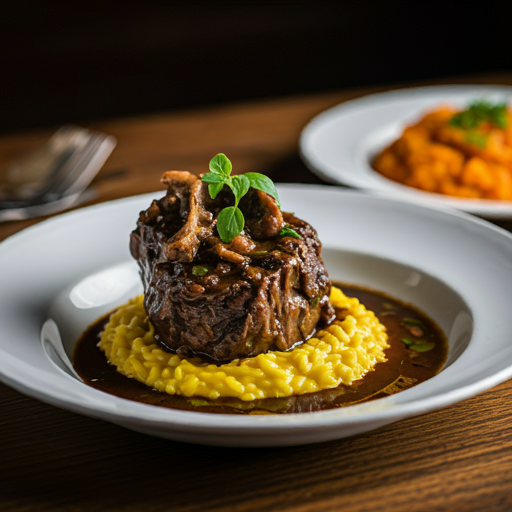

Coq au Vin

Ingredientes:
- 1 frango em pedaços
- Vinho tinto
- Cogumelos
- Bacon
- Cebolas pequenas
Modo de Preparo:
- Marine o frango no vinho
- Doure o bacon e reserve
- Cozinhe o frango no vinho
- Adicione os legumes
Ossobuco alla Milanese

Ingredientes:
- 4 ossobucos
- Vinho branco
- Caldo de legumes
- Gremolata
- Legumes para mirepoix
Modo de Preparo:
- Sele a carne
- Prepare o molho base
- Cozinhe lentamente
- Finalize com gremolata
Saltimbocca alla Romana
Ingredientes:
- Escalopes de vitela
- Presunto cru
- Sálvia fresca
- Vinho Marsala
- Manteiga
Modo de Preparo:
- Monte os escalopes
- Sele rapidamente
- Prepare o molho
- Sirva imediatamente